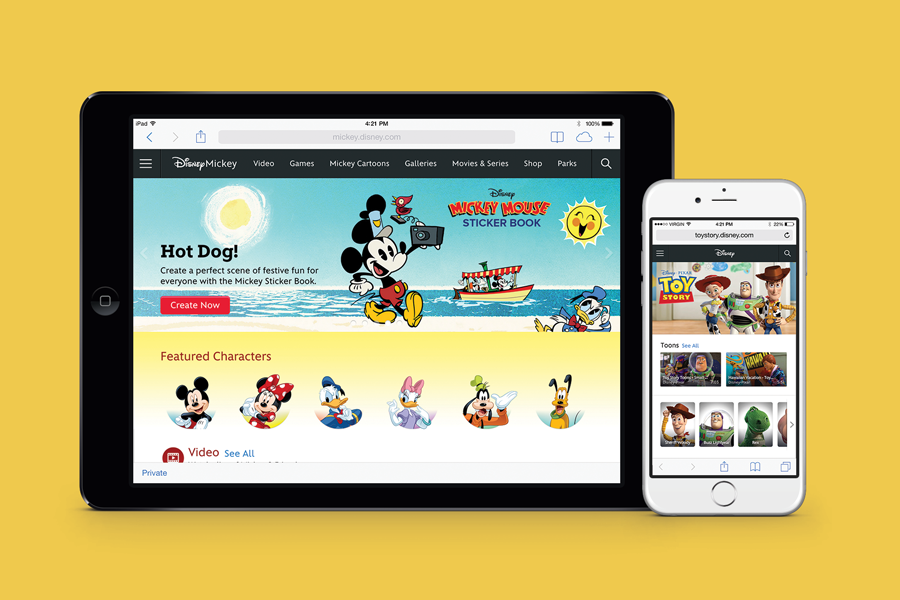
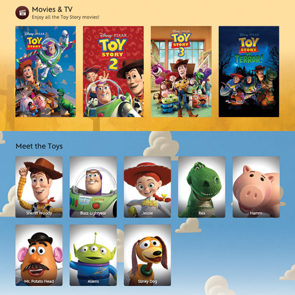
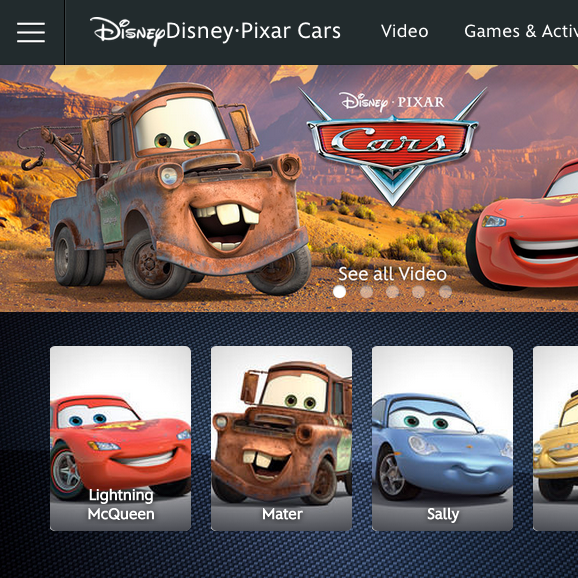
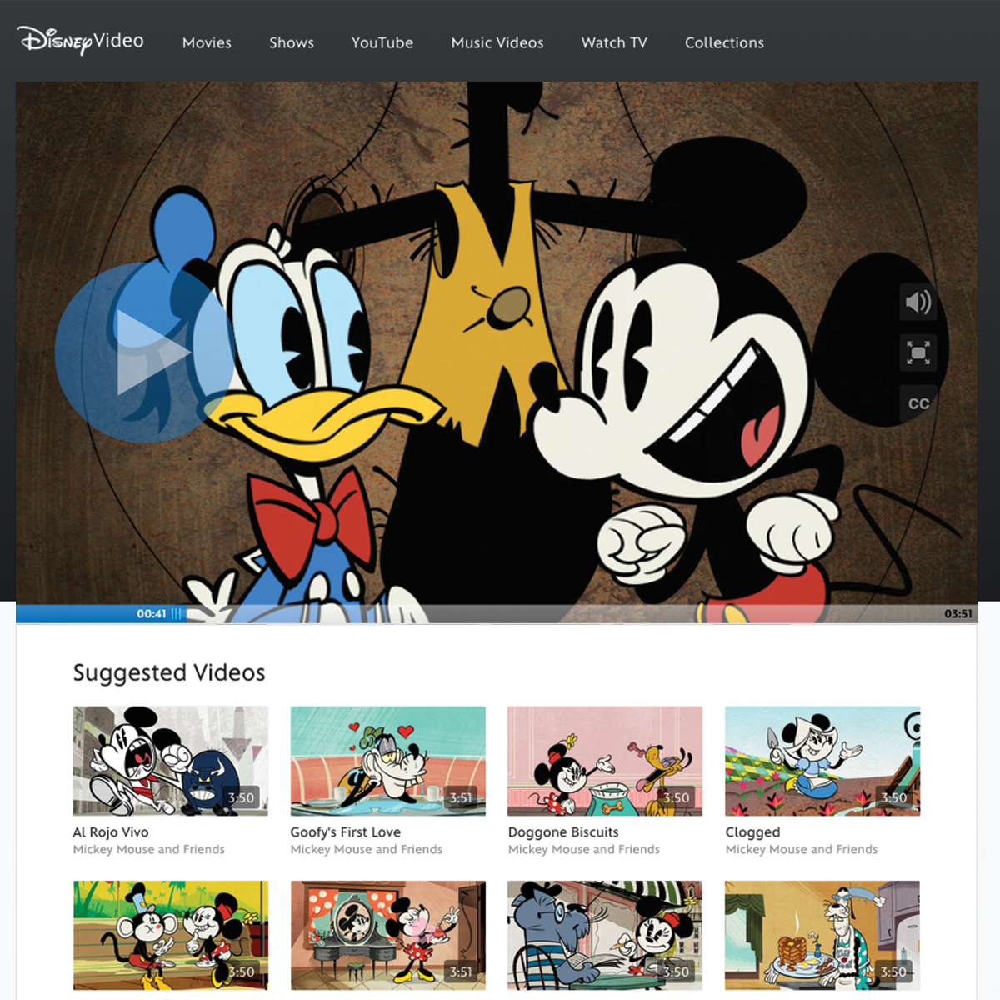
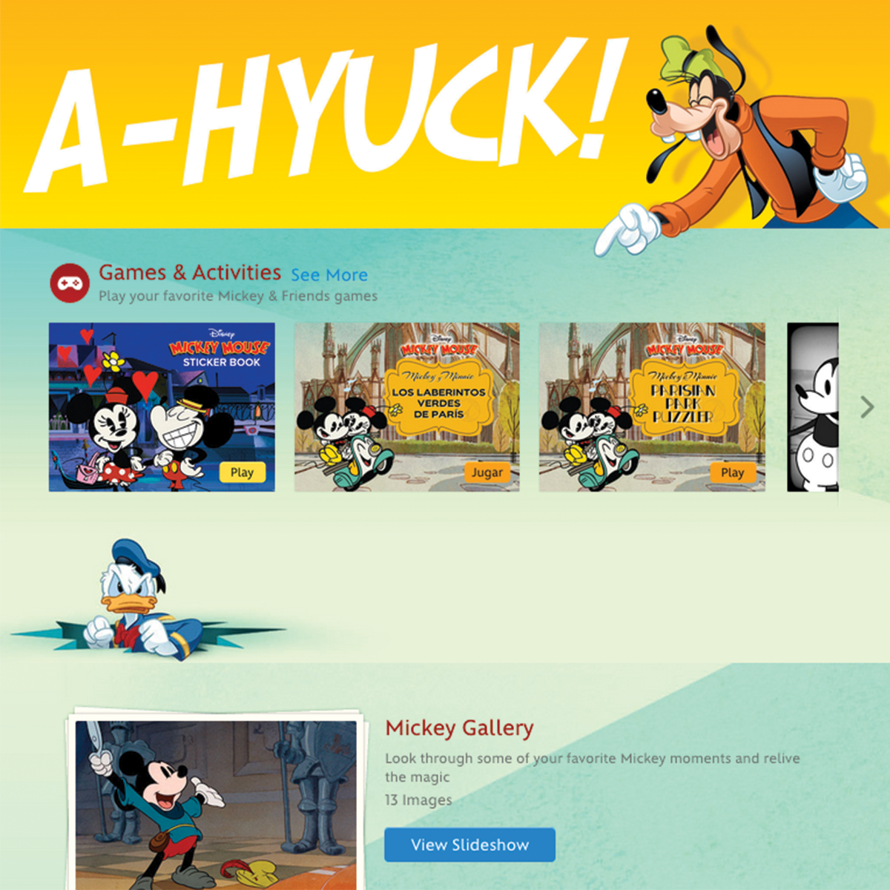

Note: details that would have violated my non-disclosure agreement with Disney have not been included in this case study. All screenshots are taken from products that have been shipped and are publically available.
During the Spring of 2013, I took a leave of absence from college to intern full-time at Disney Interactive in Glendale. When I first arrived at Disney, the design team had just reorganized and was starting fresh on building a brand new Disney.com from the ground up. They had just completed an exciting redesign of the homepage and created an extensive design language and style guide. However, most of the company's largest brands hadn't been updated yet and were located on old subdomains.
I joined Disney Interactive as an intern with the brand management team. This group of producers, managers and content strategists was responsible for coordinating with the different divisions of the Walt Disney Company to create a vision for each brand's digital experience. They were responsible for the development of the online destinations for Walt Disney Studios, Walt Disney Parks & Resorts and Pixar.
My desk was placed halfway between the Brand Management team and the main Disney.com product design group. As the only Disney.com intern in this position, I would work with my team to translate an individual brand's needs into requirements, wireframes and mockups. During this time, I also attended the product design team's scrum meetings and design critiques.
There were several reasons the old Disney website was being retired, but the most important were that the website was heavily reliant on Flash, confusingly organized and held together with ancient code that was becoming too difficult to maintain.
But the most compelling reason to redesign the site was that it wasn't optimized for mobile devices. In fact, every video and game on the site was still delivered in flash, making almost no content even accessible on these devices. The first mandate for any redesign project was to make sure our guests could access content from any device. Disney Interactive's Creative Director said it best:
Honestly, our team is kind of bored of talking about responsive design. It should no longer be considered a special feature, it's how any self-respecting website should behave in 2012. — Bobby Solomon
Scrapping the whole thing and starting from scratch was a chance to really improve the Disney.com experience for guests by creating a sense of consistency across the site. I helped update several franchises to match the functionality and design of the new Disney.com design language. These brands included Mickey Mouse, Toy Story, Peter Pan, The Muppets and Disney Corporate Responsibility.
During my time at Disney Interactive, I got to take part in almost every stage of producing and launching several new Disney franchise sites, including Mickey Mouse, Toy Story, Peter Pan, The Muppets and Disney Corporate Responsibility. It was the first time that I got to help design a site almost exclusively for children. It was also the first time I got to experience how challenging that can be.




Before working with Disney, I never had to think about the legal implications of designing for children. During one of the last months of the internship, however, I got to work on an information architecture project where our team had to make sure that a certain feature remained compliant with the FTC's Children's Online Privacy Protection Act (COPPA). We also had to work through a problem that involved making sure the layout of the site complied with FCC regulations when dealing with advertising and children.
I'm really proud of how our team collaborated with legal professionals and rigorously iterated to find solutions to these challenges.
It has that thing - the imagination, and the feeling of happy excitement - I knew when I was a kid. — Walt Disney